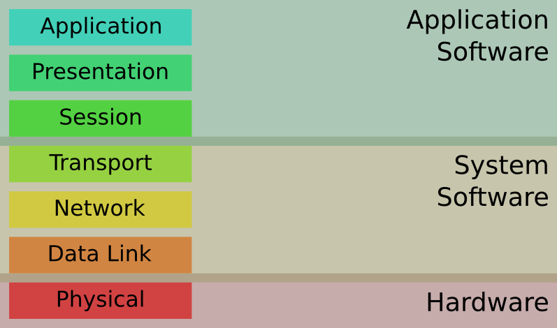
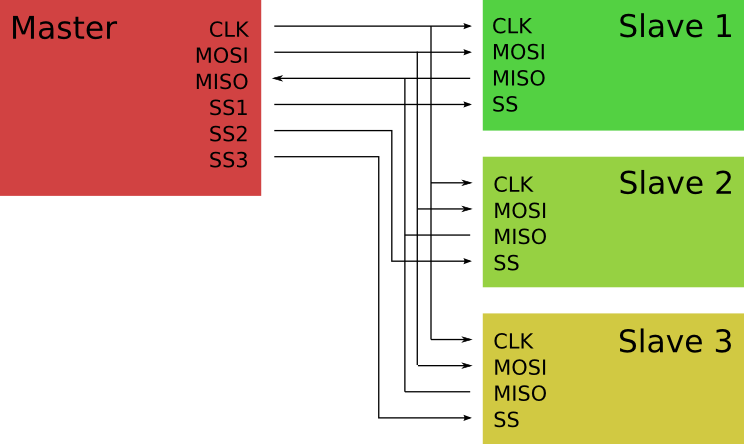
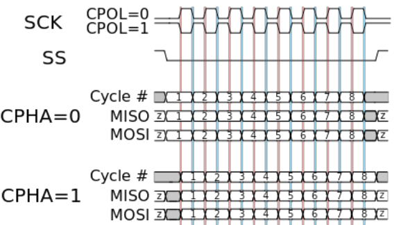
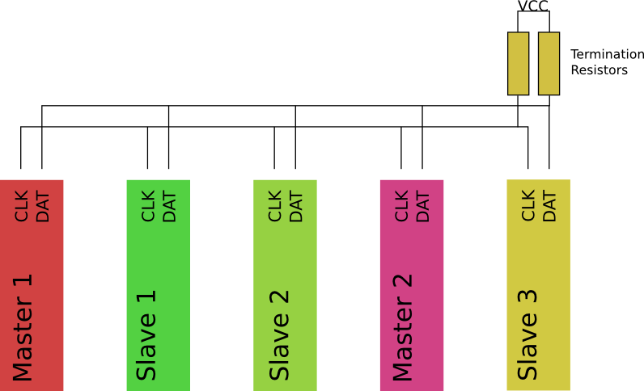
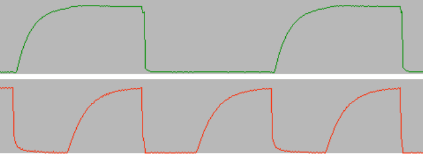
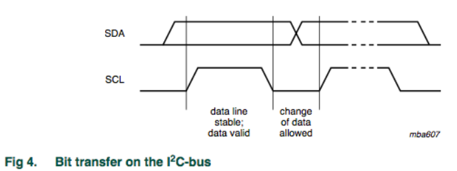
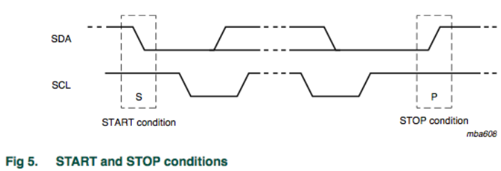
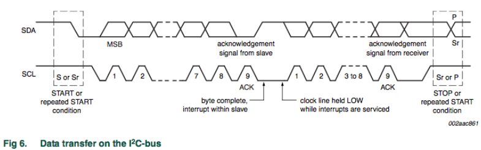
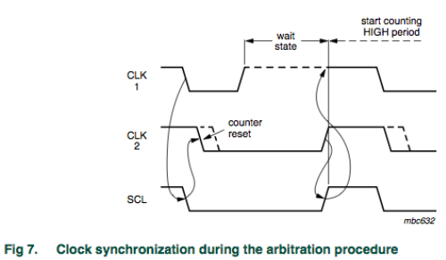
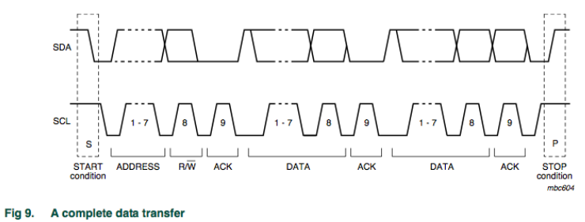

Research School of Engineering
ENGN8537: Embedded Systems and Real Time Digital Signal Processing
Here's a tip - aluminum foil makes a lovely hat and it blocks out the government's
Communication
Busses
Got to keep you guys outta trouble.
OSI Model

Within each device, the network stack can be defined in terms of the 7-layer OSI Model.
The data the end application wants transported
The application layer is the uppermost in the stack.
Conceptually this means that it shouldn’t carry data on behalf of another protocol. Application layer protocols are things like HTTP, NTP etc. They are ‘final products’.
Some application protocols have been subverted to carry other protocols; for example, web applications use HTTP to carry data associated with other protocols e.g. JSON which is in fact a presentation layer protocol itself.
Data is formatted correctly (e.g. Endianness)
This ensures that both ends of the protocol agree on data formats, that is, the data is ‘presented’ in the same way. This layer is rarely implemented separately from the application layer, as the presentation of data is dependent on the data itself which in turn is heavily dependent on what the application’s actually trying to say.
Inter-host communication, session management.
Responsible for controlling ‘conversations’ between each end. This synchronizes the applications at each end and ensures that the data that’s transferred doesn’t fall on deaf ears. Most of the functionality of TCP counts as a session layer.
Reliable delivery of packets in a network
Relied on for end-to-end transmission, error correction, reliable transmission. The rest of TCP fits in here, ensuring that packets that leave one end actually arrive at the other, retransmitting as necessary.
Data is routing between logical machines
Logical Addressing. Allows applications to request connections to particular logical locations like IP addresses.
There isn’t much that seems logical about IP addresses, but in fact they’re hierarchical identifiers that originally could location particular machines in particular labs, companies, countries etc. As the number of computers wanting IP addresses outstripped the number actually available, this model was broken and the IP address is now pretty arbitrary.
Data is routing between physical machines or devices
Physical Addressing. Logical addresses are associated with an entity like “the server for web page X”, physical addresses are associated with particular interfaces on particular machines. In common computer networks, the physical address is the ‘MAC’ address.
Physically modulates something to transfer the data
Responsible for actually twiddling electrical/light/radio states. Generally also able to detect connection to a network, collision between data sent from the local device to the interface medium.
SPI

Serial Peripheral Interface: SPI
One master, many slaves. One ‘slave select’ line per slave (or ‘chip select’) provides addressing: Only the selected slave should receive and transmit data.
Full-duplex, synchronous serial protocol. SPI is in many ways the most simply communication interface out there – no clock recovery, addressing has its own, broken out wires, separate wires for data in and out etc.
Used For
- Serial memories
- SD Cards
- Sensors
- Interface devices
- …
Can be run at several MHz if required, so useful for high rate ADCs and memories.
Defines
Data Link: Physical Addressing
Physical Layer: Data transmission/reception
Clock Edge
Only defines the Physical Layer up to two parameters: Clock Phase and Clock Polarity.

The combination of phase and polarity gives two pieces of information: Rising or Falling Edge; and whether the clock idles Low or High. Most devices care only about the edge; e.g. a device may work with POL/PHA = (0,0) or (1,1) as both of them use the rising edge.
I2C

More tightly standardized than SPI, it defines the required clock rate, a multi-master arbitration protocol and even the type of data to be transferred.
I2C was trademarked by Phillips, but rather than jump through licensing hoops, many manufacturers chose instead to implement exactly the same protocol but call it something different. A common alternative name to the same bus is ‘TWI’, the two-wire interface.
Open-Drain

Lines are driven to ground but left to “float” to VCC; the devices stop driving the bus and let the termination resistors pull the lines high.
Capacitance on the lines can cause an “Opera House” effect.
I2C has two wires, a clock and a data line. As such, it is half duplex.
Both lines are ‘Open Drain’, which means that they are driven low but never driven high, instead, pull-up resistors must be fitted to the bus. This means that whenever nothing is explicitly pulling the lines low, the bus idles high.
The open drain design means that when ever a device expects the bus to be high, it must check this fact. If the bus isn’t in the expected state, this means that another device is driving the bus at the same time. Either this is another bus master fighting for the bus, or an expected slave acknowledgement.
Clock Timing

Data must be valid while the clock is high.
Data is not latched at a particular edge.
Start and Stop

If Data does change while clock is high, this signals the beginning or end of a transfer.
In this way (and along with addresses in the data stream), no Slave Select pin is required.
Acknowledgements

Every byte is acknowledged by the receiver, by means of pulling the data line low.
This allows the master to confirm a slave is present and accepting data.
In fact the ACK slot plays another role. If the master is reading from the slave, then the master will acknowledge the receipt of a byte if and only if it wishes to receive another. That is, when the master is finished reading, it will not acknowledge the final byte.
In this way, the lack of an acknowledge is not always an error condition.
Clock Stretching

The slave may choose to hold the clock low, not allowing the master to send more data.
This would usually happen if the slave requires more time to process a request.
Addressing

The first byte after a start condition contains an address and a direction (read/write).
If there is a slave at that address, it will acknowledge the address and the transfer can proceed.
Used For
- Power Management
- System Management
- Display Data from a Computer Monitor
- Control Channels for other peripherals
- Audio Codecs
- Camera Modules
- LCD Screens
- “DIMM” memory modules
Many other protocols are built in top of I2C.
- PMBus: Power Management Bus is specified to carry messages regarding voltages, currents, power transfers and the like
- SMBus: The System Management bus is commonly found on computer motherboards, communicates simple messages such as ON/OFF
- DDC: Display Data Channel lives inside VGA, DVI and HDMI connectors and allows the video card to query display parameters such as resolution, supported colour depth and the like.
I2C is also used as a control channel in parallel with data channels.
- Camera modules commonly use I2C for configuration and a parallel colour bus for the picture information
- LCD screens often use I2C (or SPI) for configuration and a parallel colour bus for the picture information
- Audio CODECs use I2C for configuration and I2S for data transfer (you should know that from labs!)
- Standard computer memory modules use I2C for presence, capacity and error correction information while the parallel memory bus carries the read and write operations.